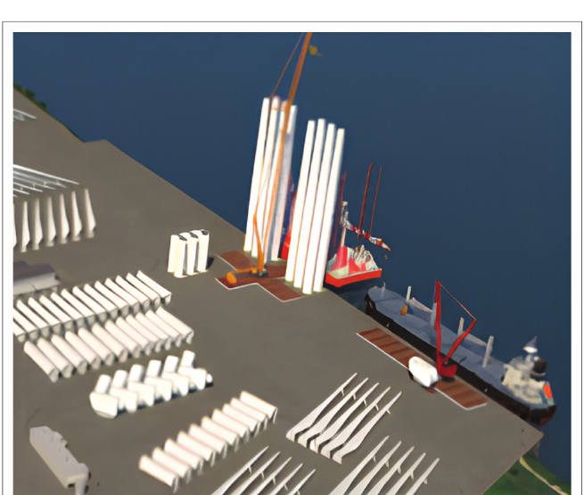
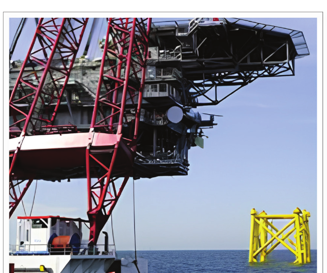
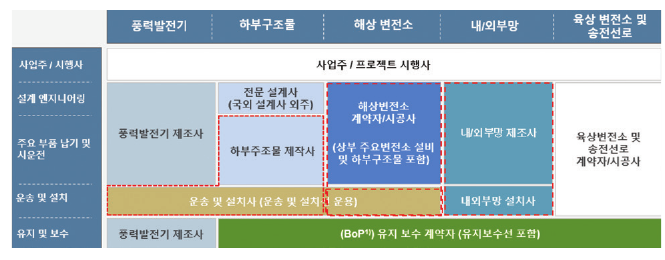

Why Is Offshore Wind a Civil Engineering Industry?
The turbine generates electricity, but the project succeeds through foundations, structures, ports, installation, regulation, and maintenance
When people see an offshore wind farm, they usually see the turbine first.
That is understandable. The turbine is the component that converts wind into electricity, and it is the most visible part of the system.
But an offshore wind project does not succeed simply because the turbine works.
The turbine has to stand on or float above a seabed. It has to survive waves, currents, storms, corrosion, and repeated cyclic loading. Components weighing hundreds or thousands of tonnes must be stored, transported, lifted, assembled, and installed offshore. The site must remain accessible for inspection and maintenance. Ports, vessels, foundations, support structures, cables, and regulatory systems all have to work together.
That leads to a different way of looking at the industry:
Offshore wind is an energy industry built on a marine infrastructure system.
For civil engineers, this distinction matters. It changes where we think the engineering problem begins and where we think our professional responsibility ends.
This article develops that argument from my earlier article, Offshore Wind Market Navigation for Civil Engineers, published in the September 2025 issue of the Magazine of the Korean Society of Civil Engineers.
The engineering problem starts when the turbine leaves land
A land-based structure is already affected by uncertainty, construction constraints, and environmental loading. Offshore, however, several additional constraints act at the same time.
The structure may be founded in weak or spatially variable seabed soils. It is exposed to waves, currents, storm surge, salt water, and marine growth. Construction and maintenance are constrained by weather windows and accessibility. Specialized vessels and lifting equipment are often required simply to reach and work at the site.
This means that offshore wind cannot be treated as a conventional power-generation project with a foundation added underneath it.
The support structure, foundation, marine environment, installation method, port logistics, and maintenance strategy interact from the beginning.
A design that is structurally efficient but difficult to fabricate or install may not be economical. A foundation that performs well analytically may become impractical if the required installation vessel is unavailable. A turbine system that performs well in operation may still suffer poor availability if maintenance access is limited.
The central engineering object is therefore not the turbine alone.
It is the complete offshore system.
Fixed and floating systems change the civil engineering problem
The original article divided offshore wind support structures broadly into fixed-bottom and floating systems.
For relatively shallow water, fixed-bottom solutions such as monopiles, jackets, and gravity-based foundations are commonly considered. The article used approximately 50 m water depth as a practical reference for this discussion, not as a universal boundary.
For fixed-bottom systems, the central civil-engineering questions include:
- seabed investigation and geotechnical characterization,
- foundation design,
- pile driving or foundation installation,
- structural dynamics,
- wave-structure interaction,
- fatigue and cyclic loading,
- scour and seabed response,
- and transport and installation planning.
As water depth increases, floating systems such as spars, semisubmersibles, and tension-leg platforms become relevant. The engineering emphasis then expands toward buoyancy, mooring, coupled motion, hydrodynamic response, and transient loading.
The boundary between the two is not simply a question of water depth. It is a change in the mechanics of the entire system.
In a fixed-bottom turbine, the seabed and foundation provide the primary restraint. In a floating turbine, station keeping is provided by buoyancy, hydrostatics, and the mooring system, while the platform is allowed to move.
So the civil engineer does not disappear when the structure begins to float.
The mechanics simply changes.
Offshore wind forces traditionally separate disciplines to work together
There is another important difference from much of conventional land-based construction.
Civil-engineering education is usually divided into recognizable subjects: structural engineering, geotechnical engineering, hydraulics, construction, transportation, and so on. That division is useful for learning the fundamentals.
Offshore wind is less willing to respect those boundaries.
A support-structure problem can simultaneously involve:
\[ \boxed{ \text{soil} +\text{structure} +\text{waves} +\text{dynamics} +\text{construction} +\text{operations} } \]
For example, changing a foundation stiffness changes structural natural frequencies. Those frequencies affect dynamic response and fatigue. The installation method constrains geometry and fabrication. Hydrodynamic loading depends on the submerged structure. Maintenance strategy depends on accessibility and vessel operation.
The disciplines remain distinct, but the engineering decisions are coupled.
This is one reason offshore wind requires a more integrative form of civil engineering than many engineers encounter in conventional projects.
The port is part of the offshore wind structure
A common mistake is to think that offshore wind begins at the shoreline.
In reality, many of the most difficult construction problems begin in the port.
Blades, towers, nacelles, foundations, and floating substructures are extremely large components. Before installation, they must be manufactured, stored, moved, assembled, lifted, and transferred to vessels.

That immediately creates civil-engineering questions:
- Can the quay and yard carry the component and crane loads?
- Can long blades and large tower sections move through the port without geometric conflict?
- Where can components be preassembled?
- Can heavy transporters turn and maneuver?
- Is the water depth sufficient for the installation vessel?
- Can lifting operations be performed safely within the available space?
The port therefore belongs inside the engineering system, not outside it.
A project can have an excellent turbine and support structure and still be constrained by inadequate port infrastructure.
Installation changes what a “good structure” means
Structural engineering is often taught as though the final installed configuration is the primary object of analysis.
Offshore construction makes that view incomplete.
Before a support structure reaches its final state, it passes through lifting, transportation, upending, lowering, piling, temporary support, connection, and other transient conditions. Some of these stages can govern the design.

This has an important practical consequence:
Constructability is not something checked after structural design. It is one of the design conditions.
The structural system, fabrication method, available vessels, lifting equipment, weather window, and installation sequence should therefore be considered together.
For civil engineers accustomed to land construction, this is familiar in principle. What changes offshore is the severity of the constraints and the cost of getting the sequence wrong.
The project does not end when installation is complete
Offshore wind also extends the infrastructure problem into operation and maintenance.
Inspection and repair require access to a remote marine structure. Crew transfer vessels, service vessels, maintenance ports, berths, spare-part logistics, and weather limitations all affect availability.
The original article therefore argued that O&M ports and logistics should also be recognized as part of the civil-engineering contribution.
This is an important shift in perspective.
The civil engineer is not responsible only for creating a structure that can resist design loads.
The structure must remain inspectable, maintainable, and operable throughout its service life.
That is a lifecycle requirement rather than a narrow structural requirement.
Regulation is also an engineering interface
The engineering system is coupled technically, but it is also coupled institutionally.
The September 2025 source article discussed Korea’s Offshore Wind Power Special Act, promulgated in March 2025, as a major change in the institutional framework. The article described a shift from developer-led individual site development toward greater government involvement in planned sites, competitive project selection, and coordinated approval procedures.
Because this is a time-dependent regulatory subject, the following comparison should be read as a snapshot of the framework described in the 2025 source article, not as a statement that every detail remains unchanged in 2026.
| Issue | Previous framework described in the source | Special-Act framework described in the source |
|---|---|---|
| Main actor | Private developer | Government-led planning framework |
| Site selection | Developer identifies individual site | Planned preliminary/development zones based on government site information |
| Permitting | Multiple approvals under individual laws | Coordinated treatment through implementation-plan approval |
| Community acceptance | Primarily developer-managed | Local public-private consultation mechanism |
| Environmental review | Reviews under separate laws | Special-Act environmental assessment framework |
| Expected schedule | Source notes 6-10 years or more | Source anticipates potential shortening |
The important engineering point is not the administrative detail by itself.
It is that regulatory boundaries affect who reviews the structure, which standards apply, when approvals occur, and what evidence of safety must be produced.
Engineers therefore need to understand not only loads and resistance, but also the assurance system surrounding the design.
Supervision and certification are not the same thing
The source article highlighted one institutional interface that deserves particular attention: the boundary between construction supervision and certification.
They can look similar because both are intended to support quality and safety, but their functions differ.
Construction supervision focuses on whether construction is performed properly in the field and whether contractual and regulatory requirements are satisfied.
Certification, by contrast, provides independent verification that the design and system satisfy specified technical criteria, often using international standards and certification frameworks such as IEC or DNV.
The two activities therefore ask different questions:
\[ \begin{aligned} \text{Supervision:} &\quad \text{Was it constructed properly?} \\ \text{Certification:} &\quad \text{Does the design/system satisfy the required criteria?} \end{aligned} \]
For an offshore project, both questions matter.
But duplication is also possible if responsibilities are not clearly defined. That makes the interface between domestic construction-quality systems and international certification systems an engineering-management issue as well as a legal one.
The market is larger than the support structure
Perhaps the most important message of the original article is represented by its industry-chain diagram.

Civil engineers often define their role too narrowly.
If the market is defined only as “designing the foundation,” the opportunity looks small.
If the engineering object is instead defined as the complete offshore infrastructure lifecycle, the scope becomes much broader:
- site and seabed investigation,
- support structures and foundations,
- offshore substations,
- marine civil works,
- ports and assembly yards,
- transport and installation,
- construction quality management,
- digital engineering and BIM,
- structural assessment,
- inspection and maintenance infrastructure,
- and decommissioning-related engineering.
The exact commercial boundary will differ from project to project. The point is not that civil engineers should perform every activity.
The point is that we should not define our own market boundary simply by asking which parts resemble conventional land construction.
What capabilities have to change?
Moving from land infrastructure to offshore wind does not mean abandoning traditional civil-engineering knowledge.
Quite the opposite.
Structural mechanics, geotechnical engineering, construction, materials, numerical analysis, and infrastructure planning remain fundamental.
But some capabilities have to expand.
The source article emphasized four areas in particular:
- Marine environment and fluid-structure interaction - enough understanding of waves, currents, hydrodynamics, and coupled response to communicate across traditional disciplinary boundaries.
- Marine construction risk - weather windows, vessel constraints, lifting, transportation, installation sequence, and offshore safety.
- Digital design and construction - BIM, FEM, simulation, and integrated information management across a complicated project chain.
- International design standards - the ability to work with the standards, recommended practices, and certification processes used in global offshore projects.
I would add one broader requirement that follows from all four:
Civil engineers need to understand the system, not only their component.
A technically correct local design can still become a poor project decision if it ignores installation, supply chain, certification, maintenance, or interfaces with neighboring systems.
What should civil-engineering education do differently?
This leads directly to education.
The answer is not to create an entirely separate curriculum that discards the traditional disciplines.
Students still need mechanics, structural analysis, geotechnical engineering, fluid mechanics, construction, materials, and numerical methods.
What is missing is often the connection between them.
An offshore-wind educational sequence should therefore expose students to problems where several existing subjects have to operate together.
For example:
\[ \text{wave environment} \rightarrow \text{hydrodynamic load} \rightarrow \text{structural response} \rightarrow \text{foundation demand} \rightarrow \text{installation and fatigue implications}. \]
The purpose is not to turn every civil engineer into a naval architect, turbine engineer, geotechnical specialist, and construction manager simultaneously.
It is to develop enough cross-domain understanding that specialists can make decisions within the same physical and project system.
That is the kind of integration offshore wind demands.
The engineering boundary should follow the project, not the coastline
There is a simple historical reason civil engineering often feels land-centered: most of the infrastructure we have built has been on land.
But there is no mechanical reason the profession must stop at the shoreline.
Offshore wind requires foundations, structures, ports, heavy construction, geotechnical engineering, environmental loading, inspection, asset management, and infrastructure planning. These are recognizably civil-engineering problems, even when they occur at sea.
The new requirement is that they must be combined with marine engineering, energy systems, certification, supply chains, and offshore operations.
So the question is not really whether offshore wind belongs to civil engineering.
A better question is:
How far along the offshore-wind project chain are civil engineers prepared to take responsibility?
The turbine produces the electricity.
But the surrounding infrastructure is what allows the turbine to be built, installed, operated, maintained, and eventually replaced or removed.
That is why offshore wind should be understood not only as an energy opportunity, but as a new domain of civil and marine infrastructure engineering.
Original source
This article is developed from:
Zi, G. (2025). “Offshore Wind Market Navigation for Civil Engineers” (토목건설인을 위한 해상풍력 시장 내비게이션), The Magazine of the Korean Society of Civil Engineers, Vol. 73, No. 9, September 2025, pp. 14-16.
The regulatory discussion above preserves the time context of that September 2025 source and should not be interpreted as a current legal update.